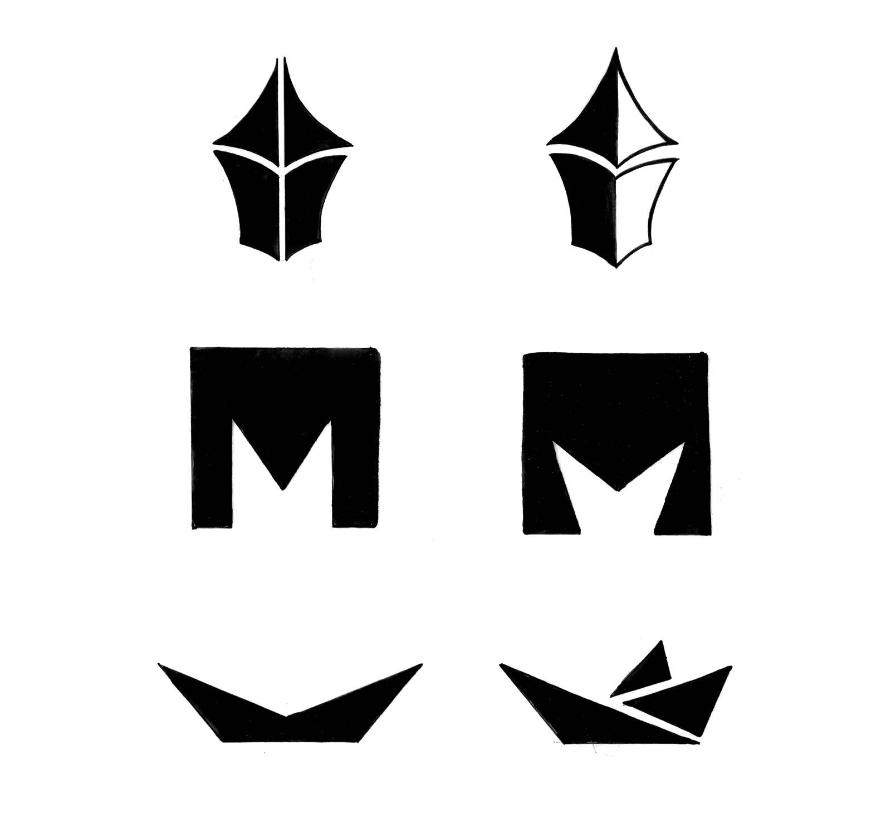
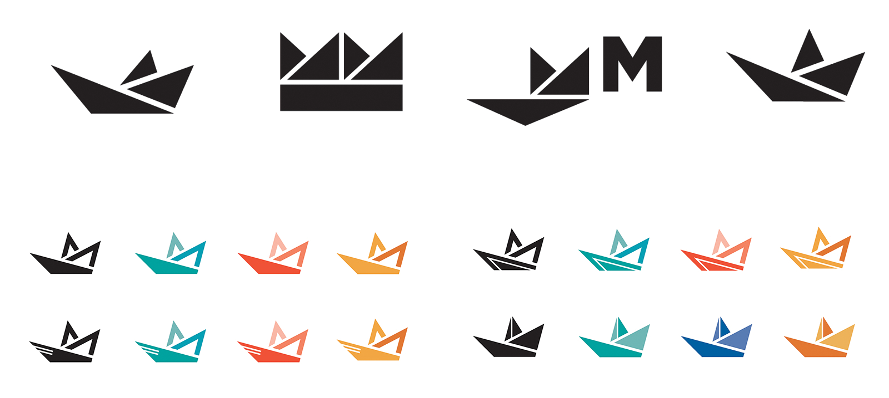
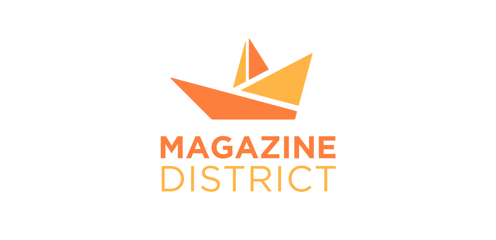
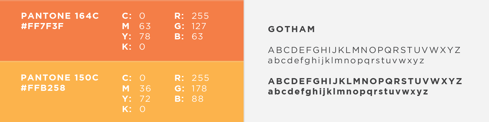

During the National Day of Civic Hacking hosted by Code for America on June 1, 2013, a group of graphic design students from Old Dominion University pitched logo concepts for Norfolk’s Emerging Arts District. The collaboration continued after the event, with the designers working on their own designs and providing feedback for the rest of the group throughout several rounds. This study focuses on personal explorations of the mark.
Magazine District was the proposed name for the area, a nod to Magazine Lane, a street that runs through it. The lane, itself, had a role in the Revolutionary War due to the presence of a gunpowder storage house.
Featured:
AltDaily
Other Logo Pitches:
Ceindy Ton Nunez
Rob Wolford
Daniel Rojas
Roles:
Design, Coordinator
Several concepts were explored to incorporate the street’s history, the art aspect, and the culture of Norfolk. Among the motifs used were revolutionary drums, magazine storages, things related to gunpowder, interconnectedness, walkability, energy, growth, and organic, sculptural forms.
From the thumbnail sketches, three were chosen. One concept proved to be the strongest, and was further refined.
This exploration led to the development of a mark that takes the shape of an explosion, a nod to the history of the lane, and also the “revolution” that this district aims to achieve in the promotion and cultivation of the arts. It also incorporates what Norfolk is known for: the Navy. This is done in the style of folded paper, which ties back to the arts with its brainstorming and idea process, and gives the vibe of playfulness and experimentation.
 The name of the arts district eventually changed in the following months, and a new identity is developed for it.